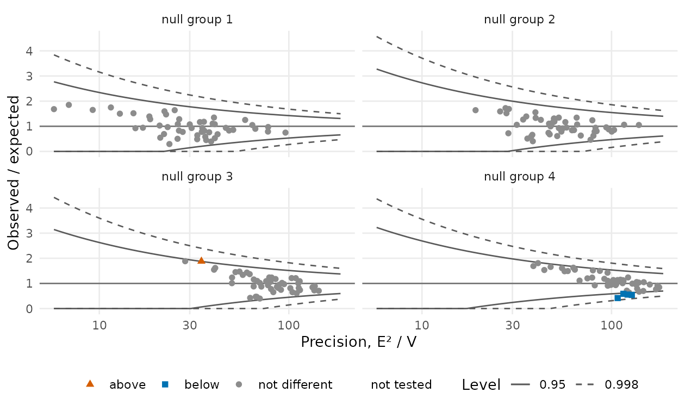
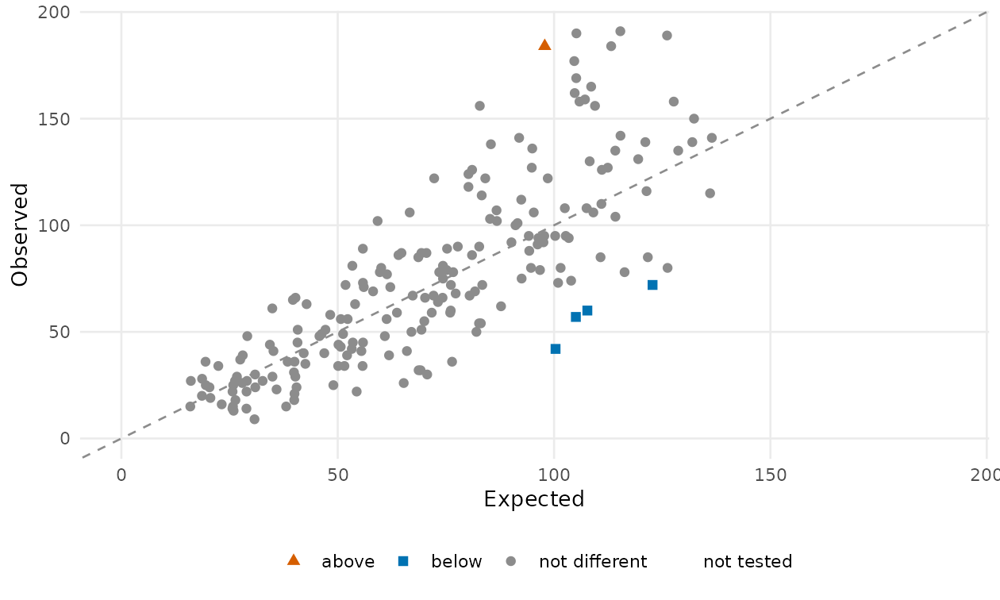

pprof provides statistical methods for provider profiling, the comparison of health care providers on patient outcomes after adjustment for differences in case mix. The package implements each step of constructing a quality measure: Risk adjustment fits models with provider-specific fixed, random, or correlated random effects for binary, continuous, and time-to-event outcomes, with optional penalized selection of risk factors. Standardization computes indirectly and directly standardized ratios, rates, and differences. Inference tests each provider against a national norm using score and Wald statistics with model-based, robust, or stabilized variances, as well as exact and likelihood ratio tests, referred to either the theoretical null or an empirical null. The package also provides a comprehensive set of plots for provider profiling, including caterpillar and funnel plots, observed-versus-expected plots, the fitted reference distribution, reliability, and variable selection paths.
Installation
# install.packages("remotes")
remotes::install_github("UM-KevinHe/pprof")A C++17 compiler is needed (Rtools on Windows, the Xcode command-line tools on macOS); OpenMP is used when available.
One analysis in ten lines
library(pprof)
d <- sim_kecc(n_providers = 200, seed = 1) # or your own data frame
pd <- pp_data(d, y = "y", x = c("x1", "x2", "x3"), # declare the columns
provider = "provider", patient = "patient", cutoff = 10)
fit <- fit_logistic_fe(pd) # logistic model, one effect per provider
summary(fit) # the risk-factor coefficients
sm <- standardize(fit, type = "indirect") # observed / expected per provider
tst <- test(fit, statistic = "score") # one score test per provider
tst # flags: 1 above, -1 below, 0 not different
plot(tst) # caterpillar plot
plot(tst, type = "funnel") # funnel plot with the test's limits
plot(sm, test = tst) # observed against expectedWhat is inside
Every measure is built on the same linear predictor, η = γi + Z⊤β: the outcome chooses the model, the arguments choose the variant, and a measure is the chain of these steps.
pp_data() data: declare the outcome, risk factors, provider and patient columns;
│ trials for a binomial outcome; time, event and start for a time to event
│
├── risk adjustment one model, one effect per provider
│ ├── fit_*() fixed effects random effects correlated random effects
│ │ binary / binomial outcome fit_logistic_fe() fit_logistic_re() fit_logistic_cre()
│ │ continuous outcome fit_linear_fe() fit_linear_re() fit_linear_cre()
│ │ time to event fit_cox() stratified by provider; two-stage with x2
│ │ discrete time to event fit_discrete_fe()
│ ├── coef() vcov() summary() coefficients, their variances, tests of the risk factors
│ └── var_select(data, penalty = "lasso" | "group_lasso"), cv(), selected_covariates()
│ risk-factor selection with the provider effects unpenalized
│
├── standardization
│ ├── standardize(fit, type = "indirect" | "direct")
│ │ one ratio, rate or difference per provider, with observed and expected
│ └── direct_expectation() the direct standardization for effects supplied by hand
│
├── inference is a provider different from the reference?
│ ├── test(fit, statistic, variance, null_model) one test per provider, flag 1 / 0 / -1
│ │ logistic statistic = exact | score | wald | lr variance = naive | robust | stabilized
│ │ linear statistic = wald variance = naive | robust
│ │ cox statistic = midp | exact | wald dispersion = none | deviance
│ ├── null_model("theoretical" | "empirical" | "fixed") the reference distribution of the statistics
│ │ calibrate(test, null_model) the flags and limits under that reference
│ ├── confint(fit) intervals for the provider effects
│ └── test_measure(estimate, se, reference) the test of a standardized measure
│
├── reliability
│ └── iur("direct" | "bootstrap" | "split_half"), iur_curve(), iur_stratified()
│
└── plots
├── plot() caterpillar | funnel | bar of a test; observed against expected of a measure;
│ forest of the coefficients; the fitted null; reliability; selection path and cv
└── flag_stability() the flags under alternative choices


Learn more
- Get started: the concepts and one complete analysis
- One article per step: data · risk-adjustment models · variable selection · standardized measures · tests · reference distributions · reliability · plots
- Function reference, grouped the same way
Getting help
Open an issue at https://github.com/UM-KevinHe/pprof/issues or write to ybshao@umich.edu or kevinhe@umich.edu.